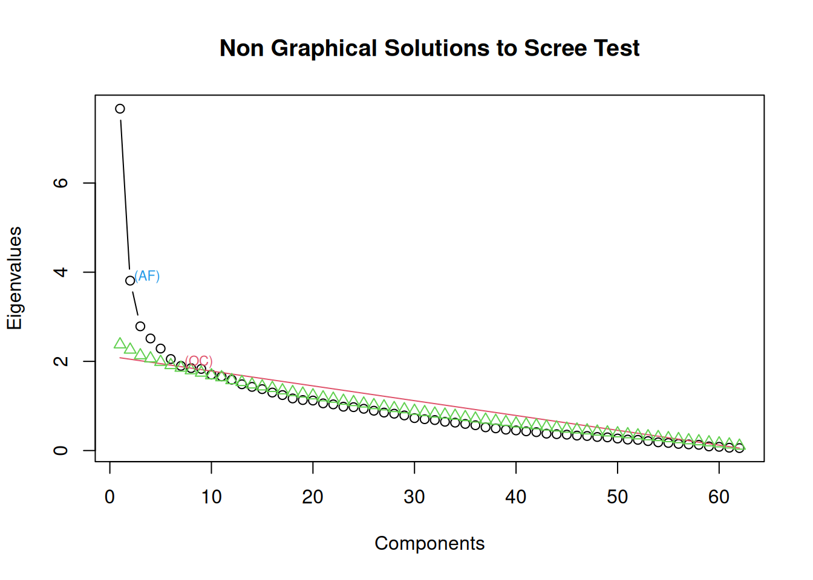
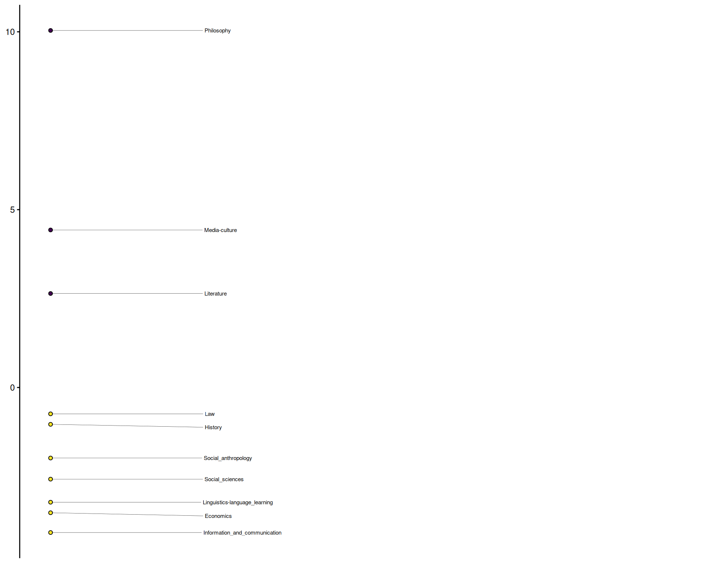
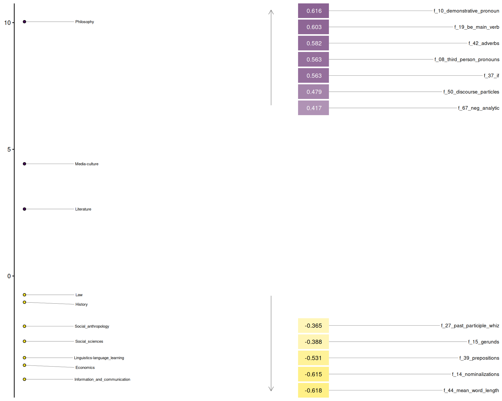

library(pseudobibeR.fr)
library(mda.biber)
library(ggplot2)
library(tidyr)
library(dplyr)
library(stringr)
library(gt)
library(broom)
library(gtsummary)
library(tibble)
corpus_candidates <- c(
file.path("..", "data", "french_corpus.rda"),
file.path("data", "french_corpus.rda"),
file.path("..", "..", "_quarto", "data", "french_corpus.rda")
)
corpus_path <- corpus_candidates[file.exists(corpus_candidates)][1]
if (is.na(corpus_path)) {
stop("Place french_corpus.rda under _quarto/data/ before rendering this tutorial.")
}
udpipe_rda <- c(
file.path("..", "data", "fc_udpipe_parsed.rda"),
file.path("data", "fc_udpipe_parsed.rda"),
file.path("..", "..", "_quarto", "data", "fc_udpipe_parsed.rda")
)
udpipe_path <- udpipe_rda[file.exists(udpipe_rda)][1]
if (is.na(udpipe_path)) {
stop("Cannot locate fc_udpipe_parsed.rda in _quarto/data/.")
}
# Load corpus data and pre-parsed tokens
load(corpus_path) # loads 'french_corpus'
load(udpipe_path) # loads 'fc_udpipe_parsed'Exploring the Chambers–Le Baron corpus
Run pseudobibeR.fr on a fully parsed academic corpus and analyze disciplinary variation using multidimensional analysis.
About the dataset
The Chambers–Le Baron corpus (2007) contains research articles from ten academic disciplines. An RDA file with the data preprocessed into a dataframe can be read in from the _quarto/data directory, which is used for documentation rendering but not distributed as part of the R package.
french_corpus |> count(discipline, name = "n_articles") discipline n_articles
1 Economics 16
2 History 13
3 Information_and_communication 15
4 Law 19
5 Linguistics-language_learning 15
6 Literature 20
7 Media-culture 18
8 Philosophy 13
9 Social_anthropology 13
10 Social_sciences 17
NoteSummary
- Articles: 159
- Total tokens: 125,445
- Disciplines: 10
- Columns:
doc_id,discipline,text
For detailed corpus composition including token counts by discipline, see Data Sources.
set.seed(20241126)
french_corpus |>
slice_sample(n = 3) |>
mutate(snippet = str_trunc(text, 220)) |>
select(doc_id, discipline, snippet) doc_id discipline
1 MC-DE-ND-XX-XX-04 Media-culture
2 LA-AD-MN-XX-XX-01 Law
3 IC-LE-CM-XX-XX-06 Information_and_communication
snippet
1 Manières d’écouter des sons. Quelques aspects du projet Écoutes signées (Ircam) Avant-propos Ce texte est issu d’une communication présentée le 17 octobre 2003 au Centre Georges- Pompidou, au cours de la journée « Out...
2 LA PRISE DE DÉCISION AU CONSEIL DE SÉCURITÉ EN MATIÈRE DE MAINTIEN DE LA PAIX : " PAS DE SORTIE SANS STRATÉGIE " Le rapport du " groupe d'étude chargé de la question des opérations de maintien de la paix " 1[1], paru ...
3 INTERNET ET LES PARTIS POLITIQUES : QUELLE PLACE REELLE POUR LE CITOYEN ? Introduction Le développement des nouvelles technologies d'information et de communication, et leur appropriation durant ces dernières décennie...Parsing the corpus (documented pipeline)
We provide pre-parsed outputs for reproducibility, but the pipeline below illustrates how to regenerate them from the raw text.
library(udpipe)
model <- udpipe_download_model(language = "french-gsd")
ud_model <- udpipe_load_model(model$file_model)
fc_udpipe_parsed <- udpipe_annotate(
ud_model,
x = french_corpus$text,
doc_id = french_corpus$doc_id,
tagger = "default",
parser = "default"
)
save(fc_udpipe_parsed, file = "../data/fc_udpipe_parsed.rda")A parallel recipe using spaCy is already stored in _quarto/data/fc_spacy_parsed.rda.
Compute Biber features
features_ud <- biber(fc_udpipe_parsed, measure = "none", normalize = TRUE) |>
left_join(french_corpus |> select(doc_id, discipline), by = "doc_id") |>
select(doc_id, discipline, everything()) |>
mutate(discipline = as.factor(discipline))
features_ud |>
select(doc_id, discipline, f_01_past_tense, f_14_nominalizations, f_52_modal_possibility)# A tibble: 159 × 5
doc_id discipline f_01_past_tense f_14_nominalizations f_52_modal_possibility
<chr> <fct> <dbl> <dbl> <dbl>
1 EC-EI… Economics 4 58.7 0
2 EC-EI… Economics 0 73.0 5.12
3 EC-EI… Economics 1.32 75.1 3.95
4 EC-EI… Economics 0 65.6 0
5 EC-EI… Economics 0 42.2 7.24
6 EC-EI… Economics 2.48 50.8 13.6
7 EC-EI… Economics 0 62.3 3.74
8 EC-EP… Economics 0 78.0 5.47
9 EC-EP… Economics 0 99.7 2.66
10 EC-EP… Economics 1.31 77.2 6.54
# ℹ 149 more rowsDiscipline-level summary
summary_tbl <- features_ud |>
group_by(discipline) |>
summarise(
nominalizations = mean(f_14_nominalizations, na.rm = TRUE),
modals = mean(f_52_modal_possibility + f_53_modal_necessity, na.rm = TRUE),
pronouns = mean(f_06_first_person_pronouns + f_07_second_person_pronouns, na.rm = TRUE)
)
summary_tbl# A tibble: 10 × 4
discipline nominalizations modals pronouns
<fct> <dbl> <dbl> <dbl>
1 Economics 69.5 5.48 1.61
2 History 60.3 4.07 2.80
3 Information_and_communication 68.0 3.46 7.12
4 Law 54.6 3.84 2.80
5 Linguistics-language_learning 63.4 3.98 8.90
6 Literature 54.8 4.12 6.45
7 Media-culture 50.0 3.18 9.07
8 Philosophy 52.4 7.58 7.76
9 Social_anthropology 57.3 3.53 8.15
10 Social_sciences 65.8 3.76 4.82Multidimensional Analysis
Following Biber’s (1988) approach, we can identify underlying dimensions that capture patterns of co-occurring linguistic features across disciplines using factor analysis.
Scree Plot
First, we examine how many factors to extract by looking at the eigenvalues:
screeplot_mda(features_ud)
Factor Loadings
Extract factor loadings to identify which features co-occur on each dimension:
loadings <- mda_loadings(
obs_by_group = features_ud,
n_factors = 3,
cor_min = 0.2,
threshold = 0.35
)
# Display loadings table
attr(loadings, 'loadings') |>
rownames_to_column("Feature") |>
gt() |>
fmt_number(
columns = everything(),
decimals = 2
)| Feature | Factor1 | Factor2 | Factor3 |
|---|---|---|---|
| f_01_past_tense | 0.05 | −0.25 | 0.12 |
| f_02_perfect_aspect | 0.30 | −0.39 | −0.11 |
| f_03_present_tense | 0.22 | 0.62 | −0.01 |
| f_04_place_adverbials | 0.07 | 0.26 | −0.21 |
| f_05_time_adverbials | 0.14 | −0.01 | −0.10 |
| f_06_first_person_pronouns | 0.07 | 0.47 | −0.02 |
| f_07_second_person_pronouns | −0.01 | 0.01 | 0.10 |
| f_08_third_person_pronouns | 0.56 | 0.40 | 0.15 |
| f_09_pronoun_it | 0.33 | 0.52 | 0.12 |
| f_10_demonstrative_pronoun | 0.62 | 0.14 | 0.03 |
| f_11_indefinite_pronouns | 0.35 | 0.13 | −0.06 |
| f_12_proverb_do | 0.03 | 0.07 | 0.04 |
| f_13_wh_question | 0.10 | 0.18 | −0.05 |
| f_14_nominalizations | −0.61 | 0.15 | 0.04 |
| f_15_gerunds | −0.39 | −0.11 | 0.10 |
| f_16_other_nouns | −0.05 | −0.37 | −0.17 |
| f_17_agentless_passives | 0.21 | −0.30 | 0.00 |
| f_18_by_passives | 0.03 | −0.23 | −0.14 |
| f_19_be_main_verb | 0.60 | 0.13 | −0.03 |
| f_20_existential_there | 0.13 | 0.12 | 0.03 |
| f_21_that_verb_comp | 0.32 | 0.15 | −0.02 |
| f_22_that_adj_comp | 0.05 | 0.04 | 0.04 |
| f_23_wh_clause | 0.26 | 0.60 | 0.00 |
| f_24_infinitives | 0.02 | 0.06 | 0.97 |
| f_25_present_participle | −0.17 | −0.05 | 0.11 |
| f_27_past_participle_whiz | −0.36 | 0.05 | −0.06 |
| f_28_present_participle_whiz | −0.33 | −0.03 | 0.02 |
| f_29_that_subj | −0.07 | 0.41 | 0.02 |
| f_30_that_obj | 0.11 | 0.36 | −0.03 |
| f_32_wh_obj | −0.02 | 0.30 | 0.03 |
| f_33_pied_piping | 0.06 | 0.32 | −0.02 |
| f_34_sentence_relatives | 0.28 | 0.09 | −0.14 |
| f_35_because | 0.35 | 0.21 | −0.16 |
| f_36_though | 0.16 | −0.16 | −0.04 |
| f_37_if | 0.56 | 0.01 | −0.09 |
| f_38_other_adv_sub | −0.08 | 0.05 | 0.78 |
| f_39_prepositions | −0.53 | −0.10 | −0.18 |
| f_40_adj_attr | −0.27 | −0.19 | 0.15 |
| f_41_adj_pred | 0.33 | 0.05 | 0.10 |
| f_42_adverbs | 0.58 | −0.10 | 0.09 |
| f_44_mean_word_length | −0.62 | 0.04 | 0.11 |
| f_46_downtoners | 0.18 | −0.17 | 0.06 |
| f_47_hedges | 0.20 | 0.02 | −0.05 |
| f_48_amplifiers | 0.15 | −0.14 | 0.02 |
| f_49_emphatics | 0.25 | −0.26 | −0.11 |
| f_50_discourse_particles | 0.48 | −0.04 | 0.02 |
| f_51_demonstratives | 0.26 | 0.25 | −0.03 |
| f_52_modal_possibility | 0.17 | −0.03 | 0.35 |
| f_53_modal_necessity | 0.11 | −0.01 | 0.39 |
| f_54_modal_predictive | 0.14 | −0.02 | 0.29 |
| f_55_verb_public | 0.26 | 0.01 | 0.10 |
| f_56_verb_private | 0.26 | 0.15 | 0.06 |
| f_57_verb_suasive | −0.13 | 0.08 | 0.23 |
| f_58_verb_seem | 0.15 | 0.20 | 0.06 |
| f_60_that_deletion | 0.16 | 0.07 | 0.66 |
| f_61_stranded_preposition | 0.10 | 0.20 | 0.10 |
| f_62_split_infinitive | 0.09 | −0.04 | 0.20 |
| f_63_split_auxiliary | 0.35 | −0.48 | 0.00 |
| f_64_phrasal_coordination | −0.25 | 0.01 | −0.02 |
| f_65_clausal_coordination | 0.28 | 0.13 | −0.18 |
| f_66_neg_synthetic | 0.34 | −0.01 | 0.03 |
| f_67_neg_analytic | 0.42 | −0.12 | 0.13 |
Factor 1 Interpretation
Factor 1 closely resembles Biber’s classic Dimension 1: Involved vs. Informational Production.
Features with positive loadings (>0.20) indicate more involved, interactive discourse:
- Demonstrative pronouns (0.61), be as main verb (0.60), and adverbs (0.58)
- Conditional clauses with if (0.56) and third-person pronouns (0.54)
- Discourse particles (0.48) and analytic negation (0.42)
Features with negative loadings (<−0.20) indicate more informational, edited prose:
- Nominalizations (−0.62) and mean word length (−0.62)
- Prepositions (−0.53) and gerunds (−0.39)
- Past and present participial whiz deletions (−0.36, −0.33)
- Attributive adjectives (−0.26) and phrasal coordination (−0.25)
This dimension captures the fundamental distinction between texts that engage readers directly through personal reference and simplified syntax (positive pole) versus texts that convey dense information through abstract nominalization and complex modification (negative pole).
stickplot_mda(loadings, n_factor = 1)
heatmap_mda(loadings, n_factor = 1)
Statistical Analysis of Disciplinary Differences
The ANOVA and regression results reveal significant disciplinary variation along Factor 1, with Philosophy emerging as a striking outlier.
ANOVA: Factor 1 by Discipline
f_aov <- aov(Factor1 ~ group, data = loadings)
broom::tidy(f_aov)# A tibble: 2 × 6
term df sumsq meansq statistic p.value
<chr> <dbl> <dbl> <dbl> <dbl> <dbl>
1 group 9 2595. 288. 7.99 1.35e-9
2 Residuals 149 5378. 36.1 NA NA The ANOVA confirms that disciplines differ significantly in their Factor 1 scores, indicating distinct rhetorical styles.
Regression: Factor 1 by Discipline
gtsummary::tbl_regression(lm(Factor1 ~ group, data = loadings)) |>
gtsummary::add_glance_source_note() |>
gtsummary::as_gt()| Characteristic | Beta | 95% CI | p-value |
|---|---|---|---|
| group | |||
| Economics | — | — | |
| History | 2.5 | -1.9, 6.9 | 0.3 |
| Information_and_communication | -0.56 | -4.8, 3.7 | 0.8 |
| Law | 2.8 | -1.2, 6.8 | 0.2 |
| Linguistics-language_learning | 0.30 | -4.0, 4.6 | 0.9 |
| Literature | 6.2 | 2.2, 10 | 0.003 |
| Media-culture | 8.0 | 3.9, 12 | <0.001 |
| Philosophy | 14 | 9.1, 18 | <0.001 |
| Social_anthropology | 1.5 | -2.9, 6.0 | 0.5 |
| Social_sciences | 0.94 | -3.2, 5.1 | 0.7 |
| Abbreviation: CI = Confidence Interval | |||
| R² = 0.325; Adjusted R² = 0.285; Sigma = 6.01; Statistic = 7.99; p-value = <0.001; df = 9; Log-likelihood = -506; AIC = 1,033; BIC = 1,067; Deviance = 5,378; Residual df = 149; No. Obs. = 159 | |||
Key findings:
Philosophy scores highest on Factor 1, showing a remarkably involved, interactive style—unusual for academic writing. Philosophy articles in this corpus employ more demonstratives, conditionals, and discourse markers than other disciplines, suggesting a more dialogic engagement with arguments and counterarguments.
Sciences (Biology, Medicine, Physics) cluster at the negative pole, favoring dense nominalization and complex noun phrases typical of empirical research reporting.
Social sciences (Economics, Linguistics) occupy intermediate positions, balancing technical precision with explanatory discourse.
This pattern suggests that even within formal academic French, disciplinary conventions shape fundamental choices about how to structure information and engage readers. Philosophy’s outlier status highlights the discipline’s tradition of argument-driven prose that maintains traces of oral disputation.
Importantly, this finding replicates cross-linguistically. Hardy and Römer’s (2013) multidimensional analysis of the MICUSP corpus (English student writing) similarly identified Philosophy at the extreme end of what they termed “Involved, Academic Narrative”—characterized by high use of personal pronouns, present tense verbs, and stance markers. The convergence across French and English academic corpora suggests that Philosophy’s distinctive rhetorical conventions transcend language-specific constraints, reflecting deeper epistemological commitments to dialogic argumentation.
Next steps
- Re-run the udpipe parsing chunk after downloading the raw text yourself.
- Swap in the spaCy-parsed
.rdato compare how feature counts shift by engine. - Explore additional factors (3, 4, 5) to identify more subtle patterns of variation.
- Use the factor scores for downstream classification or clustering tasks.
References
Chambers, A. 2007. “Le Corpus Chambers-Le Baron d’articles de Recherche En Français.” Oxford Text Archive. https://ota.bodleian.ox.ac.uk/repository/xmlui/handle/20.500.12024/2527.
Hardy, Jack A, and Ute Römer. 2013. “Revealing Disciplinary Variation in Student Writing: A Multi-Dimensional Analysis of the Michigan Corpus of Upper-Level Student Papers (MICUSP).” Corpora 8 (2): 183–207.